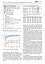
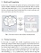

Biography
I obtained my Master's Degree of Engineering, majoring in Computer Science and Technology under supervision of Prof.
Yunni Xia, at Chongqing Key Laboratory of Software Theory and Technology,
College of Computer Science, Chongqing University (CQU), in June, 2019.
Previously, I received my Bachelor's Degree of Engineering, majoring in Computer Science and Technology, at Chongqing
University (CQU) in June, 2016.
My current research interests include Cloud Computing, Workflow Scheduling, Game Theory and Reinforcement Learning.
My Resume/CV(English/Chinese).
News!
[2019-06] A Thesis submitted to Chongqing University in partial fulfillment
of the requirement for the Master's Degree of Engineering by Yuandou Wang, supervised by Prof. Yunni Xia.
[2019-03] Our paper Multi-objective Workflow Scheduling with
Deep-Q-Network-Based Multi-Agent Reinforcement Learning has been published by IEEE ACCESS.
[2018-05] The paper A Multi-stage Dynamic
Game-Theoretic Approach for Multi-Workflow Scheduling on Heterogeneous Virtual Machines from Multiple Infrastructure-
as-a-Service Clouds has been accepted by SCC 2018.
Recent Highlights
Worked in Prof. Xia's group with a RA position and made contribution on research topics like Edge Computing and
Workflow Scheduling.
More Publications >>

Multi-objective Workflow Scheduling with Deep Q-Network-based Multi-agent Reinforcement Learning
Yuandou Wang, Hang Liu, Wanbo Zheng, Yunni Xia, Yawen Li, Peng Chen, Kunyin Guo, Hong Xie.
In
IEEE ACCESS, Vol 7, pp 39974-39982, 2019. IF: 4.098
PDF
Abstract
Cloud Computing provides an effective platform for executing large-scale and complex workflow applications with a pay-as-you-go model. Nevertheless, various challenges, especially its optimal scheduling for multiple conflicting objectives, are yet to be addressed properly. The existing multi-objective workflow scheduling approaches are still limited in many ways, e.g., encoding is restricted by prior experts' knowledge when handling a dynamic real-time problem, which strongly influences the performance of scheduling. In this paper, we apply a deep-Q-network model in a multi-agent reinforcement learning setting to guide the scheduling of multi-workflows over infrastructure-as-a-service clouds. To optimize multi-workflow completion time and user's cost, we consider a Markov game model, which takes the number of workflow applications and heterogeneous virtual machines as state input and the maximum completion time and cost as rewards. The game model is capable of seeking for correlated equilibrium between make-span and cost criteria without prior experts' knowledge and converges to the correlated equilibrium policy in a dynamic real-time environment. To validate our proposed approach, we conduct extensive case studies based on multiple well-known scientific workflow templates and Amazon EC2 cloud. The experimental results clearly suggest that our proposed approach outperforms traditional ones, e.g., non-dominated sorting genetic algorithm-II, multi-objective particle swarm optimization, and game-theoretic-based greedy algorithms, in terms of optimality of scheduling plans generated.
Codes

A Multi-stage Dynamic Game-Theoretic Approach for Multi-Workflow Scheduling on Heterogeneous Virtual Machines from Multiple Infrastructure-as-a-Service Clouds
Yuandou Wang, Jiajia Jiang, Yunni Xia, Quanwang Wu, Xin Luo, Qingsheng Zhu.
In
International Conference on Services Computing (SCC 2018) pp 137-152, CCF-C, 2018.
PDF
Abstract
Distributed computing systems such as clouds continue to evolve to support various types of scientific applications, especially scientific workflows,
with dependable, consistent, pervasive, and inexpensive access to geographically-distributed computational capabilities. Scheduling multiple
workflows on distributed computing systems like Infrastructure-as-a-Service (IaaS) clouds is well recognized as a fundamental NP-complete problem
that is critical to meeting various types of Quality-of-Service (QoS) requirements. In this paper, we propose a multi-objective optimization workflow
scheduling approach based on dynamic game-theoretic model aiming at reducing workflow make-spans, reducing total cost, and maximizing system fairness
in terms of workload distribution among heterogeneous cloud virtual machines (VMs). We conduct extensive case studies as well based on various well-known
scientific workflow templates and real-world third-party commercial IaaS clouds. Experimental results clearly suggest that our proposed approach
outperform traditional ones by achieving lower workflow make-spans, lower cost, and better system fairness.
Slides
Personal
Good at mathematical modeling and interdisciplinary learning. With great research enthusiasm and ambitions. Master's degree of Engineering candidate in Computer Science with a concentration on Cloud Computing and Service Computing. Bachelor's degree of Engineering in Computer Science and Technology. Flexible programming skills. Work well with team cooperation.
Well-motivated for high-quality research. Respect different cultures and thrive on collaborative environments.
 Homepage:
https://judiths1618.github.io/homepage
Homepage:
https://judiths1618.github.io/homepage